在取指令数据的时候，处理器的内存管理单元需要把虚拟地址转换成物理地址。如果没有虚拟页没有映射到物理页，或者没有访问权限，处理器将生成页错误异常。
虚拟页没有迎合到物理页，这种情况通常称为缺页异常，有一下几种情况。
1）访问用户栈的时候，超出了当前用户站的范围，需要扩大用户栈。
2）当进程申请虚拟内存区域的时候，通常没有分配物理页，进程第一次访问的时候触发页错误异常。
3）内存不足的时候，内核把进程的匿名页换出到交换区。
4）一个文件页被映射到进程的虚拟地址空间，内存不足的时候，内个回收这个文件页，在进程的页表中删除这个文件的映射。
5）程序错误，访问没有分配给进程的虚拟内存区域。
前面四种情况，如果页错误异常处理程序成功的把虚拟页映射到物理页，处理程序返回后，处理器重新执行触发异常的指令。
第五种情况，页错误影响处理程序将发送段违法（SIFSEGV）信号杀死进程。
没有访问权限，有以下两种情况：
1）可能是软件有意造成的，典型的例子是写时复制（Copy on Write CoW）：进程分叉生成子进程的时候，为了避免复制物理页，子进程和父进程以只读方式共享所有私有的匿名页和文件页。当其中一个进程试图写只读页时，触发页错误异常，页错误异常处理程序分配新的物理页，把旧的物理页的数据复制到新的物理页，然后把虚拟页映射到新的物理页。
2）程序错误，例如试图写只读的代码段所在的物理页。
第一种情况，如果页错误异常处理程序成功的把虚拟页映射到物理页，处理程序返回后，处理器重新执行触发异常的指令。
第二种情况，页错误异常处理程序将会发送段违法信号（SIGSEGV）杀死进程。
不同的处理器架构实现的也错误异常不同，页错误异常处理程序的前面一部分是各种处理器架构自定义部分，后面从函数handle_mm_fault开始的部分是所有处理器架构共用的部分。
假定ARM64处理器带有并开启内存管理单元。注如果没有开启内存管理单元不会转换虚拟地址，物理地址就是虚拟地址。
ARM64处理器在取指令或数据的时候，需要把虚拟地址转换成物理地址，分两种情况：
1）如果虚拟地址的高16位不是全1或全0（使用49=8位虚拟地址），是非法地址，生成页错误异常。
2）如果虚拟地址的高16位是全1或全0，内存管理单元根据关键字{地址空间标识符， 虚拟地值}查找TLB。
通常使用寄存器TTBR0_EL1的高16位存放正在纸吸管的进程的地址空间标识符（TTBR是 Translation Table Base Register的缩写 表示转换表基准寄存器，EL1是Exception Level 1de 缩写，表示异常级别1）。
寄存器TTBR1_El1存放内核的页群居目录的物理地址，寄存器TTBR0_EL1存放进程的页全局目录的物理地址。
如果命中了TLB表项，从TLB表项读取访问权限，金叉访问权限，如果没有访问权限，生成页错误异常。
如果没有明总TLB表项，内存管理单元将会查询内存中的页表，称为转换表遍历（translation table walk）分两种情况：
1）如果虚拟地址的高16位全部是1，说明内核时虚拟地址，应该查询内核的页表，从寄存器TTBR1_EL1取内核的页全局目录物理地址。
2）如果虚拟地址的高16位全部是0，说明用户虚拟地址，应该查询进程的页表，从寄存器TTBR0_EL1取进程的也全局目录的物理地址。
内存管理单元访问内存中的页表，会根据表项类型进行处理：
1）如果是无效描述符，生成页错误异常。
2）如果是块描述符或页描述符，把表项复制到TLB。
3）如果是表描述符，从表项读取下一级页表的物理地址，继续访问下一级页表。
在ARM64架构的系统中，用户程序在异常级别0运行，内核在异常级别1运行，异常级别0是用户模式，异常级别1是内核模式。
ARM64架构的内核定义了一个异常向量表，起始地址是vectors（源文件arch/arm64/kernel/entry.S），没给异常向量的长度是1128字节，但是在Linux内核中每个异常向量只有一条指令：跳转到对应的处理程序。异常向量表的虚拟地址存放在异常级别1的向量记住地址寄存器（Vctor Base Address Register for Exception Level 1）中。
如下图所示： 处理器生成页错误异常，页错误异常。页错误异常属于同步异常，处理器立即处理，从向量基准地址寄存器得到异常向量表的虚拟地址，然后根据异常类型选择对应的异常向量。
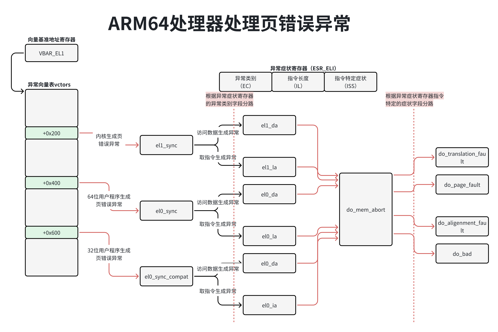
如果异常类别是64位用户程序在异常级别0生成的同步异常，异常向量的偏移及时0x200，这个异常向量跳转到函数el1_sync。
如果异常雷诺新格式64位用户程序在异常级别0生成的同步异常，异常向量的偏移是0x400，这个异常向量跳转到函数el0_sync。
如果异常类型是32位用户程序在异常级别0生成的同步异常，异常向量的偏移是0x600，这个异常向量跳转到函数el0_sync_compat。
以函数el0_sync为例说明，函数el0_sync根据异常级别1的影响症状寄存器的异常类别字段处理。
1）如果异常类别0生成的数据终止（data abort），即在异常级别0访问数据时生成页错误异常，那么调用函数el0_da。
2）如果异常类别是异常级别0生成的指令中止（instruuction abort），即在异常级别0取指令时生成页错误异常，调用函数el0_ia。
对于ARM64处理器，异常级别1的异常症状寄存器（ESR_EL·， Exception SYndrome Regsiter for Exception Lecel 1）用来存放异常的症状信息，如下图所示：
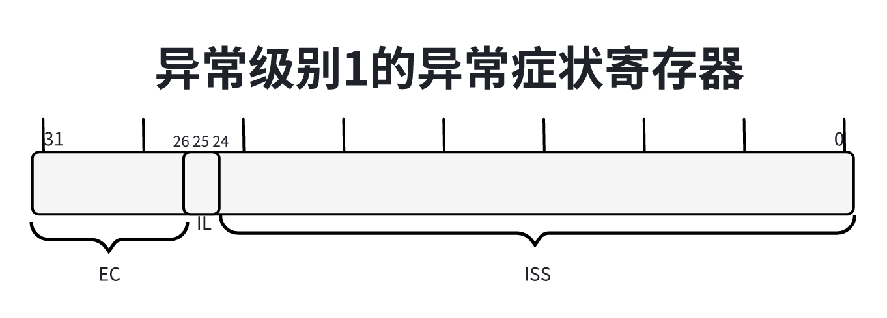
EC：异常类别（Exception Class），只是引导异常的原因。
ISS：指令特定症状（Instruction Specific Syndrome），每种异常类别独立定义这个字段。
函数do_mem_abort：页错误异常处理器最终都会执行函数do_mem_abort，该函数根据异常症状寄存器的指令特定症状字段的指令错误状态码（0~5位），调用数组fault_info中的处理函数，指令错误状态码和处理函数的对应关系如下表所示：
| 指令错误状态码 | 说 明 | 处理函数 |
|---|---|---|
| 4 | 0即转换错误（在0级转换表中酦醅无效描述符） | do_translation_fault |
| 5 | 1级转换错误（在1级转换表中匹配无效描述符） | do_translation_fault |
| 6 | 2级转换错误（在2级转换表中匹配无效描述符） | do_translation_fault |
| 7 | 3级转换错误（在3级转换表中酦醅无效描述符） | do_page_fault |
| 9 | 1即访问标志错误 | do_page_fault |
| 10 | 2级访问标志错误 | do_page_fault |
| 11 | 3级访问标志错误 | do_page_fault |
| 13 | 1级权限错误 | do_page_fault |
| 14 | 2级权限错误 | do_page_fault |
| 15 | 3级权限错误 | do_page_fault |
| 33 | 对齐错误（虚拟地址没有对齐） | do_alignment_fault |
| 其他 | 其他错误 | do_bad |
虚拟页没有映射到物理页情况：如果在0级、1级或2级转换表中匹配的表项是无效描述符，调用函数do_translation_fault来处理；如果在3级转换表中匹配的表项是无效描述符，调用函数do_page_fault来处理。
如果访问标志错误：”在1级、2级或3级转换表中匹配的表项是块描述符或页描述符，但是没有设置访问标志“，那么调用函数do_page_fault，函数do_page_fault将会为页表项设置访问标志。页回收算法需要根据页表项目访问标志判断物理页是不是刚刚被访问过。
如果权限错误：“在1级、2级或3级转换表中配的表项是块描述符或页描述符，但是没有访问权限”，那么调用函数do_page_fault。
函数do_translation_fault。
函数do_translation_fault处理在0级、1级或2级转换表中匹配的表项是无效描述符的情况，指向流程如下图所示：
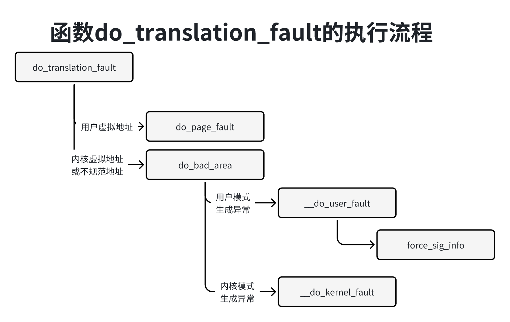
代码如下：
x1// 位置：arch/arm64/mm/fault.c2
3static int __kprobes do_translation_fault(unsigned long addr,4 unsigned int esr,5 struct pt_regs *regs)6{7 if(addr < TASK_SIZE)8 return do_page_fault(addr, esr, regs);9 10 do_bad_area(addr, esr, regs);11 return 0;12}参数addr是触发异常的虚拟地址，esr是异常症状寄存器的值，regs指向内核栈中保存的被打断的进程寄存器集合。
如果触发异常的虚拟地址是用户虚拟地址，调用函数do_page_fault来处理。如果触发异常的虚拟地址是内核虚拟地址或不规范地址，调用函数do_bad_area来处理。
函数do_bad_area的代码如下：
151// 位置：arch/arm64/faultl.c2
3static void do_bad_area(unsigned long addr, unsigned int esr, struct pt_regs *regs)4{5 struct task_struct *tsk = current;6 struct mm_struct *mm = task->active_mm;7 const struct fault_info *inf;8 9 if(user_mode(regs)) {10 inf = esr_to_fault_info(esr);11 __do_user_fault(tsk, addr, esr, inf->sig, inf->code, regs);12 }else {13 __do_kernel_fault(mm, addr, esr, regs);14 }15}如果异常是在用户模式下生成的，根据异常症状寄存器的指令特定字段的指令错误状态码在数组fault_info中取出信号，然后调用函数__do_user_fault发送信号以杀死进程。
如果异常是在内核模式下生成的，调用函数__do_kernel_fault来处理。
函数do_page_fault。
函数do_page_fault的执行流程图如下图所示：
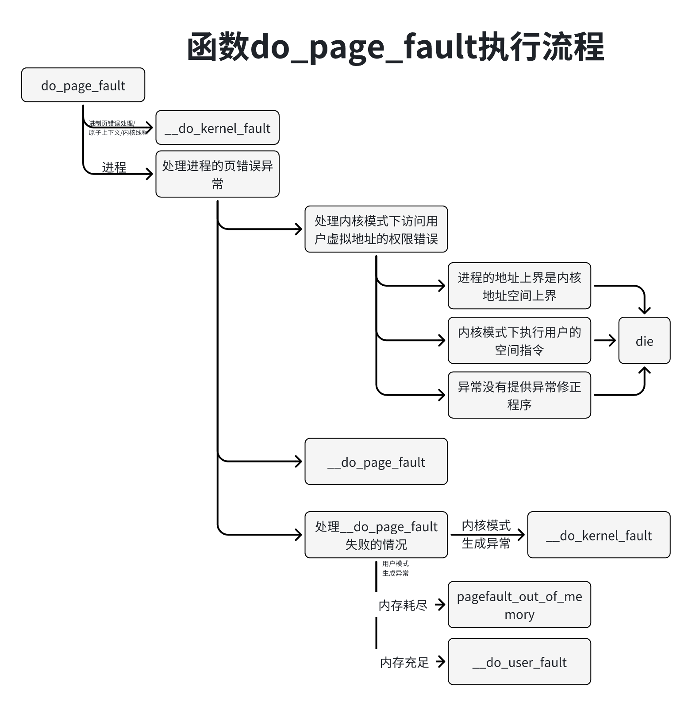
代码：
1711// 位置：/arch/arm64/mm/fault.c2
3static int __kprobes do_page_fault(unsigned long addr, unsigned int esr,4 struct pt_regs *regs)5{6 struct task_struct *tsk;7 struct mm_struct *mm;8 int fault, sig, code;9 unsigned long vm_flags = VM_READ | VM_WRITE;10 unsigned int mm_flags = FAULT_FLAG_ALLOW_RETRY | FAULT_FLAG_KILLABLE;11
12 if (notify_page_fault(regs, esr))13 return 0;14
15 tsk = current;16 mm = tsk->mm;17
18
19 // 如果进制执行错误异常的处理程序，或者处于原子上下文，或者当前进程是内核线程，20 // 那么跳转到标号no_context 调用函数__do_kernel_fault处理内核模式生成页错误异常21 22 // 禁止执行页错误异常处理程序：有些系统调用传图用户空间的缓冲区，内核使用用户虚拟地址访问缓冲区23 // 可能生成页错误异常，页错误异常处理程序可能睡眠，但是内核不想睡眠，再说会用用户虚拟地址访问24 // 缓冲区之前，调用函数pagefault_disable()禁止执行页错误异常处理程序。25 26 // 原子上下文：指向硬中断、执行软中断、禁止硬中断、禁止软中断和禁止内核抢占这五种情况不允许睡眠，27 // 称为原子上下文28 if (faulthandler_disabled() || !mm)29 goto no_context;30
31 // 如果是在用户模式下生成的异常，那么mm_flags设置标志位FAULT_FLAG_USER32 if (user_mode(regs))33 mm_flags |= FAULT_FLAG_USER;34
35 // 如果异常级别0的指令中止，即用户模式下取指令时生成的页错误异常，那么把vm_flags设置为VM_EXEC36 if (is_el0_instruction_abort(esr)) {37 vm_flags = VM_EXEC;38 39 // 如果是写时数据时生成页错误异常，那么把vm_falgs设置为VM_WRITE，mm_flags设置为标志40 // FAULT_FLAG_WRITE41 42 // （esr & ESR_ELx_WNR）表示异常症状寄存器的指令特定症状字段的WnR位是1，WnR是Write not Read43 // 1表示写 0表示读44 45 // (esr & ESR_Elx_CM)表示异常症状寄存器的指令特定症状字段CM位是0，CM是Cache Maintenacnce 46 // 缓存维护，1表示数据中止是由执行缓存维护指令或地址转换转换指令生成的，0表示数据终止是因为其他情况生成的47 } else if ((esr & ESR_ELx_WNR) && !(esr & ESR_ELx_CM)) {48 vm_flags = VM_WRITE;49 mm_flags |= FAULT_FLAG_WRITE;50 }51 52 /**53 * 如果页错误异常是进程子啊内核模式下访问用户虚拟地址的时候，因为访问权限而触发的54 * （USER_DS是用户号虚拟地址空间的上界）55 */56 if (addr < USER_DS && is_permission_fault(esr, regs, addr)) {57 58 // 如果进程在内核模式下吧地址上界设置为内核虚拟地址空间上界以后访问用户虚拟地址，那么讷河打印错误信息，然后死掉。59 // regs->orig_addr_limit等于当前进程的进程描述符的成员thread_inf.addr_limit，KERNEL_DS是内核虚拟地址空间的上界60 61 // 如果从异常级别0进入，regs->orig_addr_limit可能是062 if (regs->orig_addr_limit == KERNEL_DS)63 die("Accessing user space memory with fs=KERNEL_DS", regs, esr);64
65 // 如果进程在内核模式下视图执行用户指令，那么讷河打印错误信息然后死掉66 if (is_el1_instruction_abort(esr))67 die("Attempting to execute userspace memory", regs, esr);68
69 // 如果触发异常的指令的虚拟地址在异常列表中没有找到异常修正程序，那么配合打印错误信息然后死掉70 if (!search_exception_tables(regs->pc))71 die("Accessing user space memory outside uaccess.h routines", regs, esr);72 }73
74
75 // c尝试以读模式申请内存描述符的读写信号量mmap_sem如果申请信号量失败，76 if (!down_read_trylock(&mm->mmap_sem)) {77 // 如果实在内核模式下生成的异常，并且根据触发异常的指令的虚拟地址在异常表中没有找到表项78 // 那么跳转到no_context, 调用函数__do_kernel_fault处理内核模式生成的页错误异常79 if (!user_mode(regs) && !search_exception_tables(regs->pc))80 goto no_context;81retry:82 // 以读模式申请内存描述符的读写信号量mmap_sem 可能挂起等待。83 down_read(&mm->mmap_sem);84 } else {85
86 might_sleep();87 if (!user_mode(regs) && !search_exception_tables(regs->pc))89 goto no_context;90 }92
93 // 处理页错误异常94 fault = __do_page_fault(mm, addr, mm_flags, vm_flags, tsk);95
96
97 // 如果需要重新尝试处理页错误异常，但是进程已经收到指明的信号那么先处理信号98 if ((fault & VM_FAULT_RETRY) && fatal_signal_pending(current))99 return 0;100
101 perf_sw_event(PERF_COUNT_SW_PAGE_FAULTS, 1, regs, addr);102 103 /**104 * 如果允许重新尝试处理页错误异常，处理如下105 */106 if (mm_flags & FAULT_FLAG_ALLOW_RETRY) {107 // 如果函数_do_page_fault返回VM_FAULt_MAJOR，表示页错误，即也错五一CIA好难过处理程序108 // 需要从设备读文件，那么把线程描述符的主要页错误技术maj_flt + 1 否则，表示次要页错误，即不需要从存储设备读文件，那么把进程109 // 描述符的次要页错误技术min_flt + 1110 if (fault & VM_FAULT_MAJOR) {111 tsk->maj_flt++;112 perf_sw_event(PERF_COUNT_SW_PAGE_FAULTS_MAJ, 1, regs,113 addr);114 } else {115 tsk->min_flt++;116 pe pe_event(PERF_COUNT_SW_PAGE_FAULTS_MIN, 1, regs,117 addr);118 } 119 120 // 如果函数__do_page_fault返回VM_FAULT_RETYR，表示页错误异常处理程序被阻塞，必须充实121 // 那么重新尝试处理页错误异常122 if (fault & VM_FAULT_RETRY) {123 124 mm_flags &= ~FAULT_FLAG_ALLOW_RETRY;125 mm_flags |= FAULT_FLAG_TRIED;126 goto retry;127 }128 }129
130 up_read(&mm->mmap_sem);131
132
133 // 如果成功处理页错误异常直接返回134 if (likely(!(fault & (VM_FAULT_ERROR | VM_FAULT_BADMAP |135 VM_FAULT_BADACCESS))))136 return 0;137
138
139 // 如果在内核模式下生成的异常，那么跳转到标号no_context，调用函数_do_kernel_fault处理140 // 内核模式生成的页错误异常141 if (!user_mode(regs))142 goto no_context;143
144 // 如果内存耗尽，页错误异常处理程序申请内存失败，那么使用内存好几杀手选择进程杀死145 // 然后页错误异常处理程序返回，当前进程在重新中指令时生成页错误异常，要么内存耗尽杀死146 if (fault & VM_FAULT_OOM) {147 148 pagefault_out_of_memory();149 return 0;150 }151
152 if (fault & VM_FAULT_SIGBUS) {153 154 sig = SIGBUS;155 code = BUS_ADRERR;156 } else {157 158 sig = SIGSEGV;159 code = fault == VM_FAULT_BADACCESS ?160 SEGV_ACCERR : SEGV_MAPERR;161 }162
163 // 如果是在用户模式下生成的异常，164 // 那么发送总线地址错误信号SINGBUS或段违法信号SIGSEGV杀死进程165 __do_user_fault(tsk, addr, esr, sig, code, regs);166 return 0;167
168no_context:169 __do_kernel_fault(mm, addr, esr, regs);170 return 0;171}函数__do_page_fault。
执行流程如下图所示：
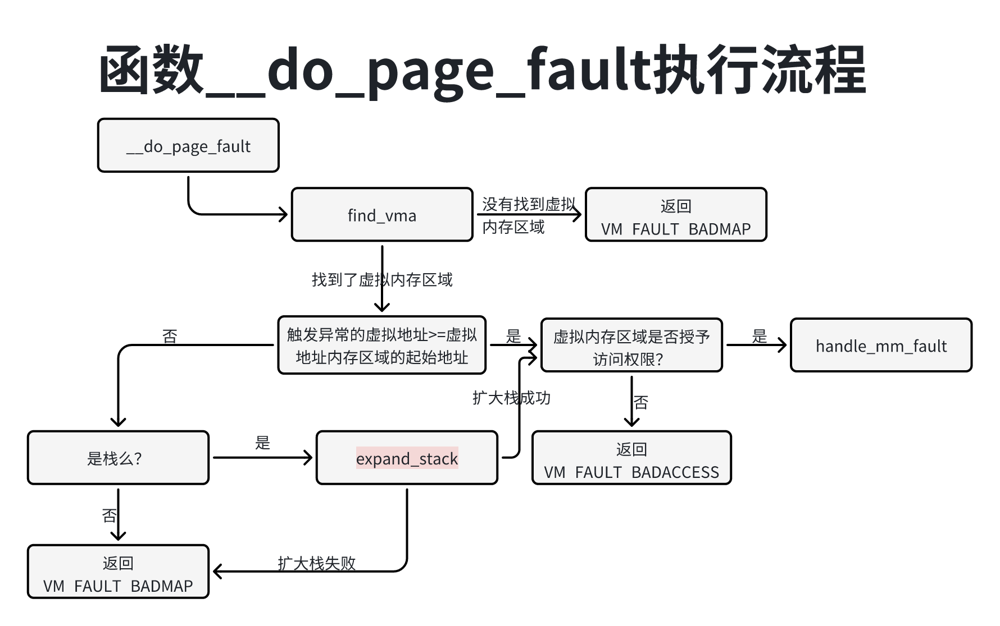
代码：
451// 位置：arch/arm64/mm/fault.c2
3static int __do_page_fault(struct mm_struct *mm, unsigned long addr,4 unsigned int mm_flags, unsigned long vm_flags,5 struct task_struct *tsk)6{7 struct vm_area_struct *vma;8 int fault;9
10 // 根据触发异常的虚拟地址紫禁城的虚拟内存区域红黑树查找一个满足条件的虚拟内存区域11 // 触发异常的虚拟地址小于虚拟内存区域的结束地址12 vma = find_vma(mm, addr);13 fault = VM_FAULT_BADMAP;14 // 如果没有找到虚拟内存区域，说明内核没有把触发异常的虚拟地址分配给进程，虚拟地址是非法的15 // 就返回VM_FAULT_BADMAP16 if (unlikely(!vma))17 goto out;18 19 // 如果找到虚拟内存区域的其实地址比触发异常的虚拟地址大， 调准到标号 check_stack继续处理20 21 // 如果这个虚拟内存区域是栈，那么调用函数expand_stack扩大栈的虚拟内存区域，如果扩大栈成功22 // 就检查访问权限，然后调用函数handle_mm_fault处理页错误异常23 24 // 如果这个虚拟内存区域不是栈，或者扩大栈失败，说明内核没有把触发异常的虚拟地址分配给进程25 // 虚拟地址是非法的， 26 if (unlikely(vma->vm_start > addr))27 goto check_stack;28
29good_area:30
31 // 检查访问权限， 如果虚拟内存区域没有授予触发页错误异常的访问权限， 就直接返回VM_FAULT_BADACCESS32 if (!(vma->vm_flags & vm!(vma->vm_flags & vmVM_FAULT_BADMAP_flags)) {33 fault = VM_FAULT_BADACCESS;34 goto out;35 }36
37 // 处理页错误异常38 return handle_mm_fault(vma, addr & PAGE_MASK, mm_flags);39
40check_stack:41 if (vma->vm_flags & VM_GROWSDOWN && !expand_stack(vma, addr))42 goto good_area;43out:44 return fault;45}从函数handle_mm_fault开始的部分是所有处理器架构共用的部分，函数hanle_mm_fault负责处理用户的页错误异常，用户空间页错误异常是指进程访问用户虚拟地址生成的页错误异常，分两种情况：
1）进程在用户模式下访问用户的虚拟地址，生成页错误异常。
2）进程在内核模式下访问用户虚拟地址，生成页错误异常。进程通过系统调用进入内核模式，系统调用传入用户空间的缓冲区，进程在内核模式下访问用户空间的缓冲区。
如果页错误异常处理程序确认虚拟地址属于分配给进程的虚拟内存区域，并且虚拟内存区域授予触发页错误异常的访问权限，就会运行到函数handle_mm_fault。
函数handle_mm_fault执行流程如下图所示：
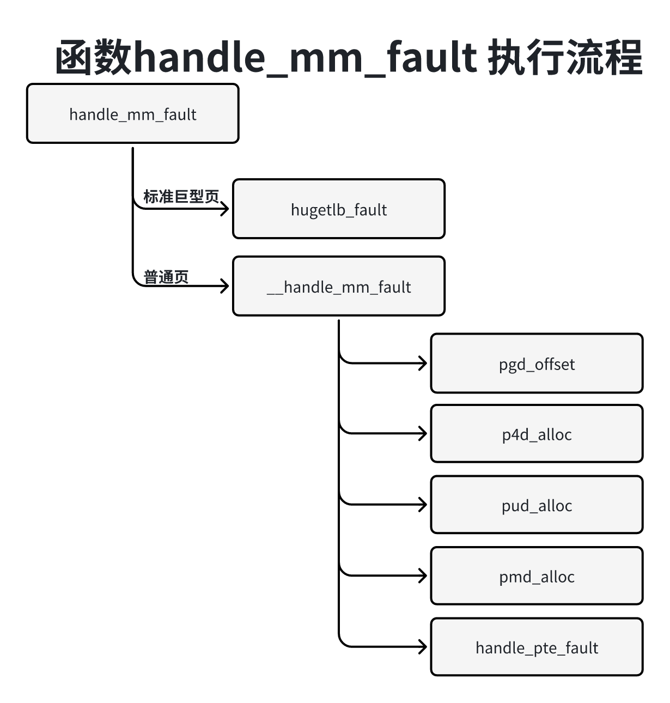
主要代码：
381// 位置：mm/memory.c2
3static int __handle_mm_fault(struct vm_area_struct *vma, unsigned long address,4 unsigned int flags)5{6 struct vm_fault vmf = {7 .vma = vma,8 .address = address & PAGE_MASK,9 .flags = flags,10 .pgoff = linear_page_index(vma, address),11 .gfp_mask = __get_fault_gfp_mask(vma),12 };13 struct mm_struct *mm = vma->vm_mm;14 pgd_t *pgd;15 p4d_t *p4d;16 int ret;17
18 // 在页全局目录中查找虚拟地址对应的表项19 pgd = pgd_offset(mm, address);20 // 在页4级目录中查找虚拟地址对应的表项，如果页4级目录不存在就先创建页4级目录21 p4d = p4d_alloc(mm, pgd, address);22 if (!p4d)23 return VM_FAULT_OOM;24
25 // 在页上层目录中查找虚拟地址对应的表项，如果页上层目录不存在 就先创建页上层目录26 vmf.pud = pud_alloc(mm, p4d, address);27 if (!vmf.pud)28 return VM_FAULT_OOM;29 ...30 // 在页中间目录查找虚拟地址对应的表项，如果页中间目录不存在就先创建页中间目录31 vmf.pmd = pmd_alloc(mm, vmf.pud, address);32 if (!vmf.pmd)33 return VM_FAULT_OOM;34 ...35
36 // 到达直接页表，调用函数handle_pte_fault来处理37 return handle_pte_fault(&vmf);38}函数handle_pte_fault处理直接页表，执行流程如下图：
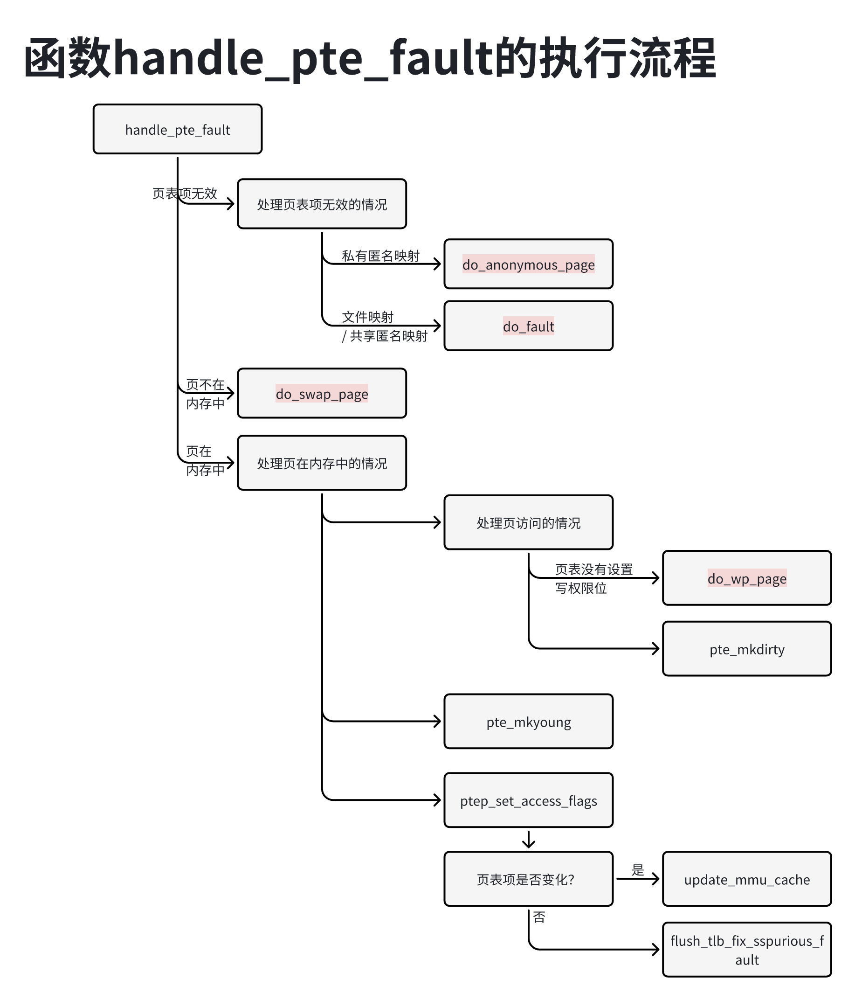
代码：
891// 位置：mm/memory.c2
3static int handle_pte_fault(struct vm_fault *vmf)4{5 pte_t entry;6
7 /** 8 * 直接页表中查找虚拟地址对应的表项9 */10 // 如果中间目录表项是空表项，说明直接页表不存在，那么把vmf->pte设置成空指针11 if (unlikely(pmd_none(*vmf->pmd))) {12
13 vmf->pte = NULL;14 15 16 } else {17 // 如果页中间目录表项不是空表项，说明直接页表存在，那么在直接页表中查找虚拟地址对应的表型，18 // vmf->pte存放表项的地址，vmf->orig_pte存放页表项的值，如果是页表项，vmf->pte没必要存放表项的地址19 // 设置成空指针20 if (pmd_devmap_trans_unstable(vmf->pmd))21 return 0;22
23 vmf->pte = pte_offset_map(vmf->pmd, vmf->address);24 vmf->orig_pte = *vmf->pte;25
26 barrier();27 if (pte_none(vmf->orig_pte)) {28 pte_unmap(vmf->pte);29 vmf->pte = NULL;30 }31 }32
33 // 如果逼向不存在（直接页表不存在或者页表是空表项）34 if (!vmf->pte) {35 // 如果是私有匿名映射 调用do_anonoyomous处理匿名页和缺页异常36 if (vma_is_anonymous(vmf->vma))37 return do_anonymous_page(vmf);38 else39 // 如果文件映射或者共享匿名映射，（内核使用共享文件隐私个号实现共享匿名映射， 区别在于文件40 // s是内核创建的内部文件， 进程看不见）调用函数do_fault处理文件页的缺页异常41 return do_fault(vmf);42 }43
44 // 如果页表存在，但是页不在物理内存中，说明页被换出到交换区，那么调用函数do_swap_page45 // 把页从交换区读到内存中46 if (!pte_present(vmf->orig_pte))47 return do_swap_page(vmf);48 if (pte_protnone(vmf->orig_pte) && vma_is_accessible(vmf->vma))49 return do_numa_page(vmf);50
51 // 如果页表存在并且页在物理内存中，这种情况，页错误异常是由访问权限触发52 // 获取页表锁， 有两种实现方式53 // 1）粗粒度锁看，一个进程一个页表锁，54 // 2）细粒度锁，每个直接页表一个锁，为了屏蔽两种实现方式的差异，提供pte_lockptr()来获取页表锁的地址55 vmf->ptl = pte_lockptr(vmf->vma->vm_mm, vmf->pmd);56 // 锁住页表57 spin_lock(vmf->ptl);58 entry = vmf->orig_pte;59 // 重新读取页表项的值，如果和第10行代码没有锁住页表的时候读取的值不同，说明其他处理器可能正在修改60 // 同一个页表项，那么当前处理器只需要等着使用其他处理器没有设置的页表项，没必要继续处理页错误异常61 if (unlikely(!pte_same(*vmf->pte, entry)))62 goto unlock;63 64 // 如果页错误语义场是由写操作触发的65 if (vmf->flags & FAULT_FLAG_WRITE) {66 // 如果页表项没有写权限，那么调用函数do_wp_page只想写时复制67 if (!pte_write(entry))68 return do_wp_page(vmf);69 // 如果页表项没有写权限，那么设置表项的脏标志位，表示页的数据没有被修改70 entry = pte_mkdirty(entry);71 }72 // 设置页表项73 entry = pte_mkyoung(entry);74 if (ptep_set_access_flags(vmf->vma, vmf->address, vmf->pte, entry,75 vmf->flags & FAULT_FLAG_WRITE)) {76 // 如果页表项发生变化，调用update_mmu_cache更新处理器内存单元的页表缓存77 update_mmu_cache(vmf->vma, vmf->address, vmf->pte);78 } else {79
80 // 如果页表项没有变化，并且页错误异常是由写操作触发的，说明页错误异常可能是TLB表项和页表项不一致导致的81 // 那么使用TLB表项失效82 if (vmf->flags & FAULT_FLAG_WRITE)83 flush_tlb_fix_spurious_fault(vmf->vma, vmf->address);84 }85unlock:86 // 释放页表的锁87 pte_unmap_unlock(vmf->pte, vmf->ptl);88 return 0;89}接下来描述匿名页的缺页异常，文件页的缺页异常和写时复制，把页从交换区督导内存中。
什么情况会触发匿名页异常呢？
1）函数的局部变量比较大，或者函数调用的层次比较深，导致当前栈不够用，需要扩大栈。
2）进程调用malloc，从堆申请了内存块，只分配了虚拟内存区域，还没有映射到物流业，第一次访问触发缺页异常。
3）进程直接调用mmap，创建匿名的内存映射，只分配了虚拟内存区域，还没有映射到物理页，第一次访问时触发缺页异常。
函数do_anonymous_page处理私有匿名页的缺页异常，执行流程如下图所示：
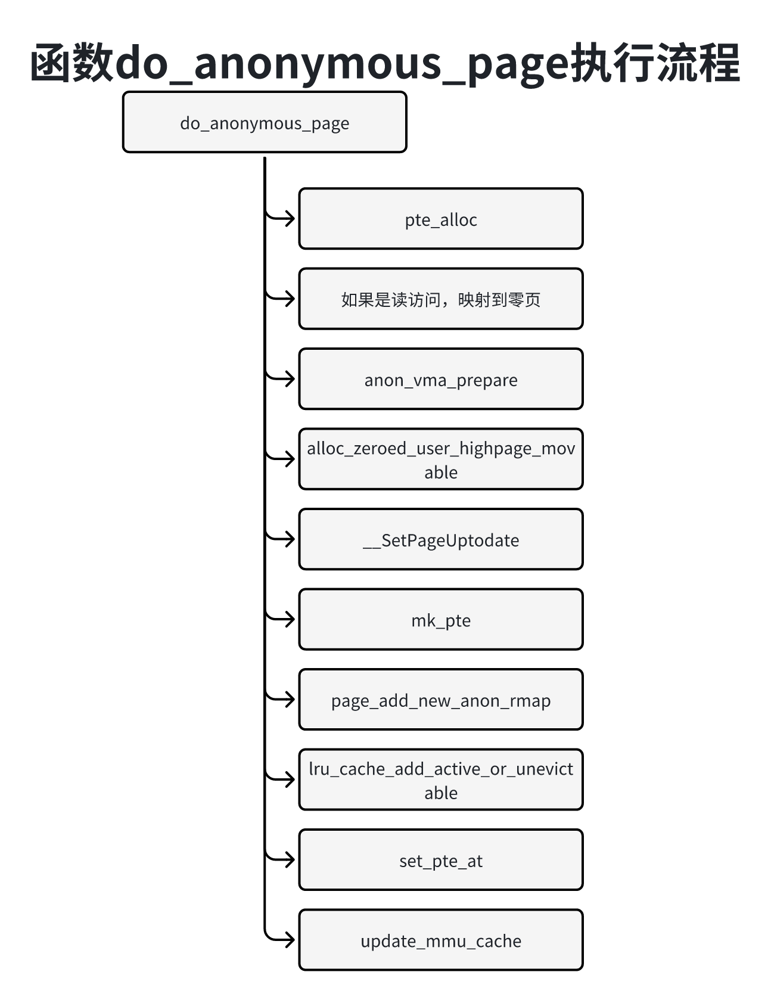
961// 位置：mm/memory.c2
3static int do_anonymous_page(struct vm_fault *vmf)4{5 struct vm_area_struct *vma = vmf->vma;6 ...7 struct page *page;8 pte_t entry;9
10 // 如果共享的匿名映射，但是虚拟内存区域没有提供虚拟内存操作集合（vm_area_struct.vm_ops）11 // 返回错误号 VM_FAULt_SIGBUS12 13 /* F没有->vm_ops的文件映射？ */14 if (vma->vm_flags & VM_SHARED)15 return VM_FAULT_SIGBUS;16
17 // 如果直接页表不存在 分配页表18 if (pte_alloc(vma->vm_mm, vmf->pmd, vmf->address))19 return VM_FAULT_OOM;20
21 ...22
23 // 如果缺页异常是由读操作触发的，并且进程允许使用零页，那么把虚拟页映射到一个专用的零页24 /* 如果是读操作，映射到零页 */25 if (!(vmf->flags & FAULT_FLAG_WRITE) &&26 !mm_forbids_zeropage(vma->vm_mm)) {27 // 生成特殊的页表项，隐私个号到专用的零页28 entry = pte_mkspecial(pfn_pte(my_zero_pfn(vmf->address),29 vma->vm_page_prot));30 // 在直接页表中查找虚拟地址对应的表项，并且锁住表31 vmf->pte = pte_offset_map_lock(vma->vm_mm, vmf->pmd,32 vmf->address, &vmf->ptl);33 34 // 如果页表项不是空表项，说明其他处理器设置的页表项，没必要继续处理页错误异常35 if (!pte_none(*vmf->pte))36 goto unlock;37 ...38 // 跳转到setpte标号设置页表项39 goto setpte;40 }41
42 // 关联一个anon_vma实例到虚拟内存区域43 /* 分配我们自己的私有页. */44 if (unlikely(anon_vma_prepare(vma)))45 goto oom;46 // 分配物理页，优先从高端内存区域分配，并且用零初始化47 page = alloc_zeroed_user_highpage_movable(vma, vmf->address);48 if (!page)49 goto oom;50
51 ...52 // 设置页描述符的标志位PG_updtodate，表示物理页包含有效的数据53 __SetPageUptodate(page);54
55 // 使用页帧号和访问权限生成页表项56 entry = mk_pte(page, vma->vm_page_prot);57 // 如果虚拟内存区域有些去年，设置页表项的脏标志位和些权限，脏标志位表示页的数据被修改过58 if (vma->vm_flags & VM_WRITE)59 entry = pte_mkwrite(pte_mkdirty(entry));60 // 在直接页表中查找虚拟地址对应的表项，并且锁住页表61 vmf->pte = pte_offset_map_lock(vma->vm_mm, vmf->pmd, vmf->address,62 &vmf->ptl);63 // 如果页表项不是空表项，说明其他处理可能正在修改同一个页表项那么当前处理器只需要等64 // 着其他处理器设置的页表项，没必要继续处理页错误异常65 if (!pte_none(*vmf->pte))66 goto release;67
68 ...69
70 inc_mm_counter_fast(vma->vm_mm, MM_ANONPAGES);71 // 建立物理页到虚拟页的反向映射72 page_add_new_anon_rmap(page, vma, vmf->address, false);73 ...74 // 把物理页添加到活动LRU链表中不可回收LRU链表中，页回收算法需要从LRU链表选择需要回收的物理页75 lru_cache_add_active_or_unevictable(page, vma);76setpte:77 // 设置页表项78 set_pte_at(vma->vm_mm, vmf->address, vmf->pte, entry);79
80 // 更新处理器的页表缓存81 /* 不需要从页表缓存中删除页表项，因为以前虚拟页没有映射到物理页 */82 update_mmu_cache(vma, vmf->address, vmf->pte);83unlock:84 // 释放页表的锁85 pte_unmap_unlock(vmf->pte, vmf->ptl);86 return 0;87release:88 ...89 mem_cgroup_cancel_charge(page, memcg, false);90 put_page(page);91 goto unlock;92oom_free_page:93 put_page(page);94oom:95 return VM_FAULT_OOM;96} 什么情况会触发文件页的缺页异常呢？
1）启动程序的时候，内核为程序的代码段和数据段创建私有的文件映射，映射到进程的虚拟地址空间，第一次访问的时候触发文件页的缺页异常。
2）进程使用mmap创建文件映射，把文件的一个区间映射到进程的虚拟地址空间，第一次访问的时候触发文件页的缺页异常。
函数do_fault处理文件页和共享匿名页的缺页异常，流程如下图：
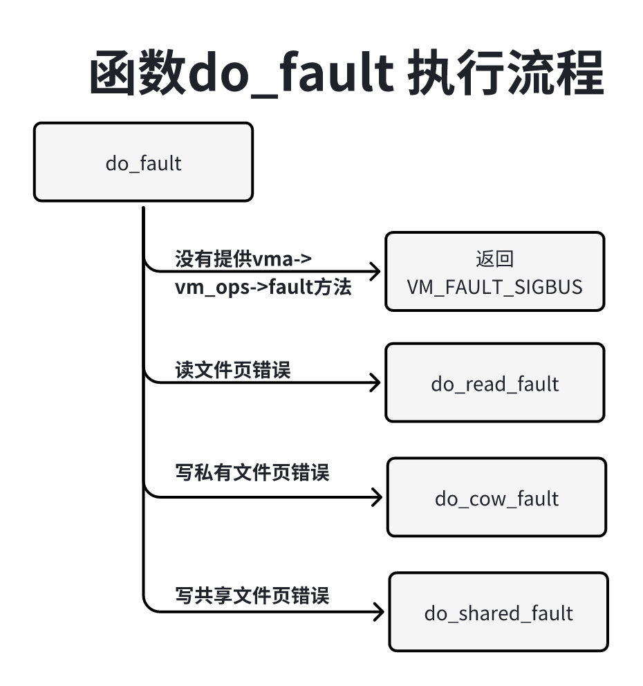
301// 位置： mm/memory.c2
3static int do_fault(struct vm_fault *vmf)4{5 struct vm_area_struct *vma = vmf->vma;6 int ret;7
8 // 如果虚拟内存区域没有提供处理页异常的方法，（vma_artea_struct.vm_ops->fault）9 // 返回错误号 VM_FAULT_SIGBUS10 /* 这个vm_area_struct结构体在执行mmap()的时候没有完全填充，或者缺少标志VM_DONTEXPAND */11 if (!vma->vm_ops->fault)12 ret = VM_FAULT_SIGBUS;13 14 // 如果缺页异常是由读文件页触发的，调用函数do_cow_fault处理写私有文件页错误，执行写时复制15 else if (!(vmf->flags & FAULT_FLAG_WRITE))16 ret = do_read_fault(vmf);17 else if (!(vma->vm_flags & VM_SHARED))18 ret = do_cow_fault(vmf);19 20 // 如果缺页异常是由写共享文件页映射触发的，调用函数do_shared_faul 写共享文件页的错误21 else22 ret = do_shared_fault(vmf);23
24
25 if (vmf->prealloc_pte) {26 pte_free(vma->vm_mm, vmf->prealloc_pte);27 vmf->prealloc_pte = NULL;28 }29 return ret;30}方法如下
把文件页从存储设备上的额文件系统读到文件的也缓存（每个文件由一个缓存，因为以页为单位，称为页缓存）中。
设置进程的页表项，把虚拟页映射到文件的页缓存中的物理页。
函数do_read_fault处理读文件页错误，执行流程如下图：
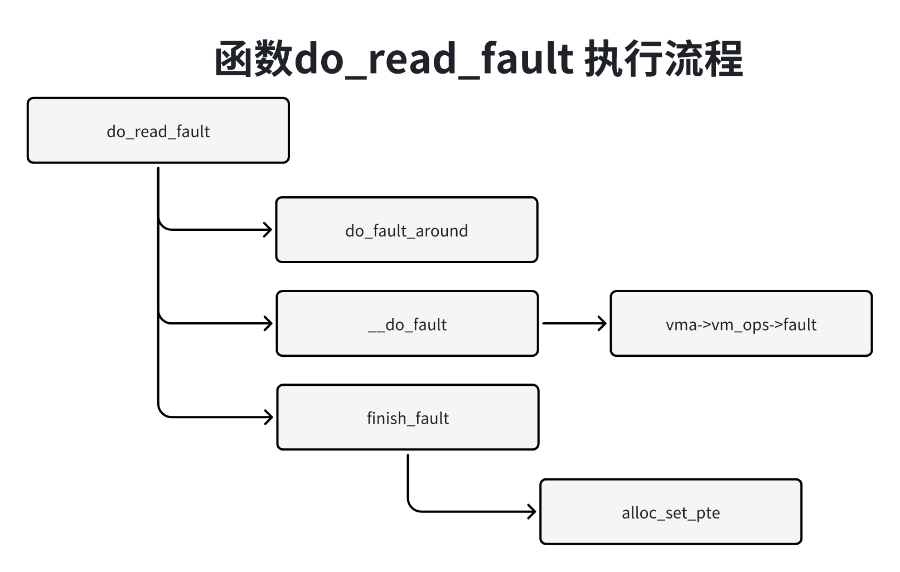
281// 位置：mm/memory.c2
3static int do_read_fault(struct vm_fault *vmf)4{5 struct vm_area_struct *vma = vmf->vma;6 int ret = 0;7
8 // 为了减少页错误异常的次数，如果正在访问的文件后面的几个文件页也被映射到虚拟地址空间9 // 那么预先读取到页缓存中。全局变量fault_around_bytes控制总长度，默认值64KB，如果页长度10 // 是4KB，就一次读取16页11 if (vma->vm_ops->map_pages && fault_around_bytes >> PAGE_SHIFT > 1) {12 ret = do_fault_around(vmf);13 if (ret)14 return ret;15 }16
17 // 把文件页读到文件的也缓存中18 ret = __do_fault(vmf);19 if (unlikely(ret & (VM_FAULT_ERROR | VM_FAULT_NOPAGE | VM_FAULT_RETRY)))20 return ret;21
22 // 设置页表项，把虚拟页映射到文件的页缓存中的物理页23 ret |= finish_fault(vmf);24 unlock_page(vmf->page);25 if (unlikely(ret & (VM_FAULT_ERROR | VM_FAULT_NOPAGE | VM_FAULT_RETRY)))26 put_page(vmf->page);27 return ret;28}函数__do_fault需要使用使用虚拟内存区域的虚拟内存操作集合中的fault方法（vma_area_struct.vm_ops->fault）来把文件映射到区域的虚拟内存操作集合，fault方法负责处理文件页的缺页异常，比如，EXT4文件系统注册的虚拟内存操作集合是ext4_file_vm_ops，fault方法是函数ext4_filemap_fault。许多文件系统注册额的fault方法是通用的的函数filemap_fault。
给定一个虚拟内存区域vma，函数filemap_fault读文件页的方法如下：
1）根据vma->vm_file得到文件的打开实例file。
2）根据file->f_mapping得到文件的地址空间mapping。
3）使用地址空间操作集合中的readpage方法（mapping->a_ops->readpage）把文件页读到内存中。
函数finish_fault负责设置页表项，把主要工作委托给函数alloc_set_pte执行流程如下图所示：
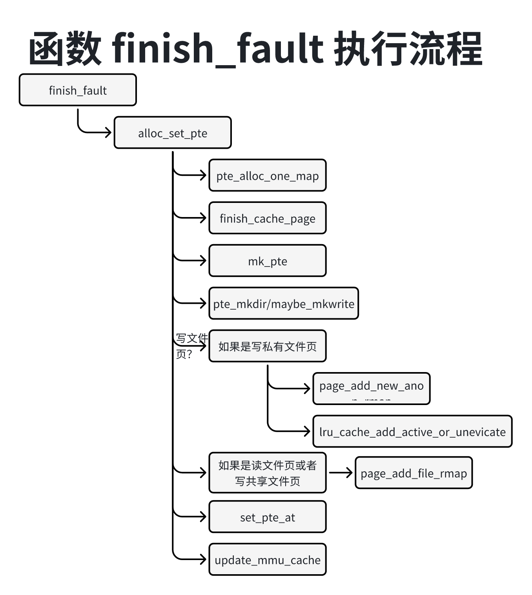
代码：
681// 位置： mm/memory.c2
3int alloc_set_pte(struct vm_fault *vmf, struct mem_cgroup *memcg,4 struct page *page)5{6 struct vm_area_struct *vma = vmf->vma;7 bool write = vmf->flags & FAULT_FLAG_WRITE;8 pte_t entry;9 int ret;10
11 if (pmd_none(*vmf->pmd) && PageTransCompound(page) &&12 IS_ENABLED(CONFIG_TRANSPARENT_HUGE_PAGECACHE)) {13 /* THP on COW? */14 VM_BUG_ON_PAGE(memcg, page);15
16 ret = do_set_pmd(vmf, page);17 if (ret != VM_FAULT_FALLBACK)18 return ret;19 }20
21 // 如果直接页表不存在，那么分配直接页表，根据虚拟地址在直接页表查找页表项，并且锁住页表22 if (!vmf->pte) {23 ret = pte_alloc_one_map(vmf);24 if (ret)25 return ret;26 }27
28 // 如果在锁住页表以后发现页表不是空表项， 说明其他处理器修改了同一页表项，那么当前处理器放弃处理29 /* 锁住页表后重新检查 */30 if (unlikely(!pte_none(*vmf->pte)))31 return VM_FAULT_NOPAGE;32
33 // 从指令缓冲中冲刷页34 flush_icache_page(vma, page);35 // 使用页真好和访问权限生成页表项的值36 entry = mk_pte(page, vma->vm_page_prot);37 38 // 如果是写访问，设置页表项的脏标志位和写权限位39 if (write)40 entry = maybe_mkwrite(pte_mkdirty(entry), vma);41 42 // 如果写私有文件页43 /* 写时复制页 */44 if (write && !(vma->vm_flags & VM_SHARED)) {45 inc_mm_counter_fast(vma->vm_mm, MM_ANONPAGES);46 // 建立物理页到虚拟页的反向映射47 page_add_new_anon_rmap(page, vma, vmf->address, false);48 mem_cgroup_commit_charge(page, memcg, false, false);49 // 把物理页添加到活动的LRU链表或不可回收LRU链表中，页回收算法需要从LRU链表中50 // 中选择需要回收的物理页51 lru_cache_add_active_or_unevictable(page, vma);52 } else {53 54 inc_mm_counter_fast(vma->vm_mm, mm_counter_file(page));55 56 // 如果读文件页或写共享文件页，那么把文件页的页表映射计数加157 page_add_file_rmap(page, false);58 }59 // 设置页表项60 set_pte_at(vma->vm_mm, vmf->address, vmf->pte, entry);61
62 // 更新处理器的页表缓存63 /* 不需要无效：一个不存在的页不会被缓存 */64 update_mmu_cache(vma, vmf->address, vmf->pte);65
66 return 0;67}68
处理写私有文件页错误的方法如下：
1）把文件页从存储设备上的文件系统读到文件的也缓存中。
2）执行写时复制，为文件的也缓存中的物理页创建一个副本，这个副本是进程的私有匿名页，和文件脱离关系，修改副本不会导致文件变化。
3）设置进程的页表项，把虚拟页映射到副本。
函数do_cow_fault处理私有文件页错误，流程图如下所示：
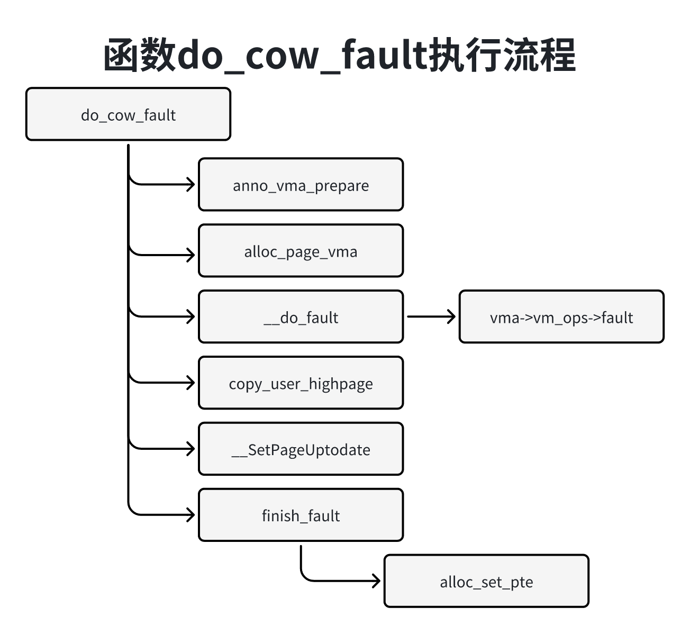
461// 位置：mm/memory.c2
3static int do_cow_fault(struct vm_fault *vmf)4{5 struct vm_area_struct *vma = vmf->vma;6 int ret;7
8 // 关联一个anon_vma实例到虚拟内存区域9 if (unlikely(anon_vma_prepare(vma)))10 return VM_FAULT_OOM;11
12 // 因为后面需要执行写时复制，所以预先为副本分配一个物流页13 vmf->cow_page = alloc_page_vma(GFP_HIGHUSER_MOVABLE, vma, vmf->address);14 if (!vmf->cow_page)15 return VM_FAULT_OOM;16 17 if (mem_cgroup_try_charge(vmf->cow_page, vma->vm_mm, GFP_KERNEL,18 &vmf->memcg, false)) {19 put_page(vmf->cow_page);20 return VM_FAULT_OOM;21 }22
23 // 把文件页读到文件的也缓存中24 ret = __do_fault(vmf);25 if (unlikely(ret & (VM_FAULT_ERROR | VM_FAULT_NOPAGE | VM_FAULT_RETRY)))26 goto uncharge_out;27 if (ret & VM_FAULT_DONE_COW)28 return ret;29
30 // 把文件页读到文件的也缓存中31 copy_user_highpage(vmf->cow_page, vmf->page, vmf->address, vma);32 // 设置副本页描述符的标志位PG_uptodate，表示物理页包含有效的数据33 __SetPageUptodate(vmf->cow_page);34
35 // 设置页表项，把虚拟页映射到副本物理页36 ret |= finish_fault(vmf);37 unlock_page(vmf->page);38 put_page(vmf->page);39 if (unlikely(ret & (VM_FAULT_ERROR | VM_FAULT_NOPAGE | VM_FAULT_RETRY)))40 goto uncharge_out;41 return ret;42uncharge_out:43 mem_cgroup_cancel_charge(vmf->cow_page, vmf->memcg, false);44 put_page(vmf->cow_page);45 return ret;46}处理写共享文件页错误的方法如下：
1）把文件页从存储设备上的文件系统读到文件的也缓存中。
2）设置进程的页表项，把虚拟页云南省古河道文件的页缓存中的物理页。
函数do_shared_fault处理共享文件页错误，执行流程如下图所示：
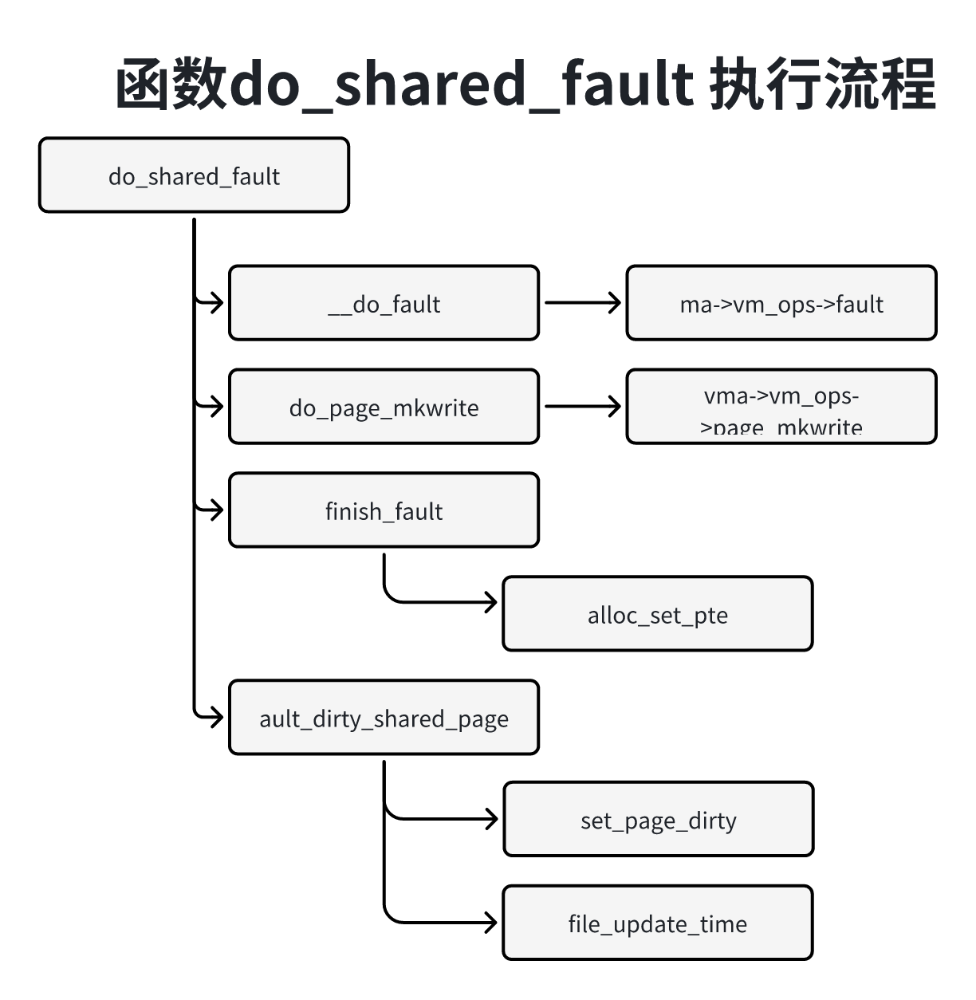
391// 位置：mm/memory.c2
3
4static int do_shared_fault(struct vm_fault *vmf)5{6 struct vm_area_struct *vma = vmf->vma;7 int ret, tmp;8
9 // 把文件页读到文件的也缓存中10 ret = __do_fault(vmf);11 if (unlikely(ret & (VM_FAULT_ERROR | VM_FAULT_NOPAGE | VM_FAULT_RETRY)))12 return ret;13
14 // 如果创建内存映射的时候文件所属的文件系统注册了虚拟内存操作集合中的page_mkwrite15 // 那么调用该方法，通知文件系统”页即将变成可写的“文件系统判断是否允许写或者等待页进入适当的状态16 if (vma->vm_ops->page_mkwrite) {17 unlock_page(vmf->page);18 tmp = do_page_mkwrite(vmf);19 if (unlikely(!tmp ||20 (tmp & (VM_FAULT_ERROR | VM_FAULT_NOPAGE)))) {21 put_page(vmf->page);22 return tmp;23 }24 }25
26 // 设置页表项，把虚拟页映射到文件的也缓存中的物理页27 ret |= finish_fault(vmf);28 if (unlikely(ret & (VM_FAULT_ERROR | VM_FAULT_NOPAGE |29 VM_FAULT_RETRY))) {30 unlock_page(vmf->page);31 put_page(vmf->page);32 return ret;33 }34
35 // 设置页的脏标志位，表示页的数据被修改，如果文件所属文件系统没有注册虚拟内存操作集合中的page_mkwrite方法，36 // 那么更新文件的修改时间37 fault_dirty_shared_page(vma, vmf->page);38 return ret;39}有两种情况会执行写时复制（Copy on Write， CoW）。
1）进程分叉生成子进程的时候，为了避免复制物理页，子进程和父进程以只读方式共享所有私有does匿名映页和文件页。当其中一个进程试图写只读页时，触发页错误异常，页错误异常初六程序分配新的物理页，把就得物理页的数据复制到新的物理页，然后把虚拟页映射到新的物理页。
2）进程创建私有文件映射，然后读访问，触发页错误异常，异常处理程序把文件读到页缓存，然后以只读模式把虚拟页映射到文件的也缓存中的物理页。接着执行写访问，触发页错误异常，异常处理程序执行写时复制，为文件的也缓存重点额物流业创建一个副本，把缓存页映射到副本。这个副本是进程的私有匿名页，和文件脱离关系，修改副本不会导致文件变化。
函数do_wp_page处理写时复制，执行流程如下图所示：
调用函数vm_normal_page，从页表项得到页帧号，然后得到页真好对应的页描述符。
特殊映射不希望关联页描述符，直接使用页帧号，可能因为也描述符不存在，也可能是因为不想使用页描述符。特殊映射有两种实现方式：
1）有些处理器架构在页表项中定义了特殊映射位PTE_SPECIAL。
2）有些处理器架构的页表没有空闲的为，使用更复杂的实现方案：页帧号（Page Frame Number PFN）映射，虚拟内存区域设置了标志VM_PFNMAP，内核提供了函数remap_pfn_range()来把页真好映射到进程的虚拟页。还有混合映射，虚拟内存区域设置了标志位VM_MIXEDMAP，映射可以包含页描述符或页帧号。
使用页帧号的特殊映射。
1）如果是共享的可写映射，不需要复制物理页，调用函数wp_pfn_shared来设置页表项的写权限位。
2）如果是私有的可写映射，调用函数wp_page_copy以复制物流页，然后把虚拟页映射到新的物理页。
使用页描述符的正常映射。
1）如果是共享的可写映射，不需要复制物理页，调用函数wp_page_shared来设置页表想的写权限位。
2）如果是私有的可写映射，调用函数wp_page_copy以复制物理页，然后把虚拟页映射到新的物理页。
函数wp_page_copy执行写时复制，流程图如下图所示：
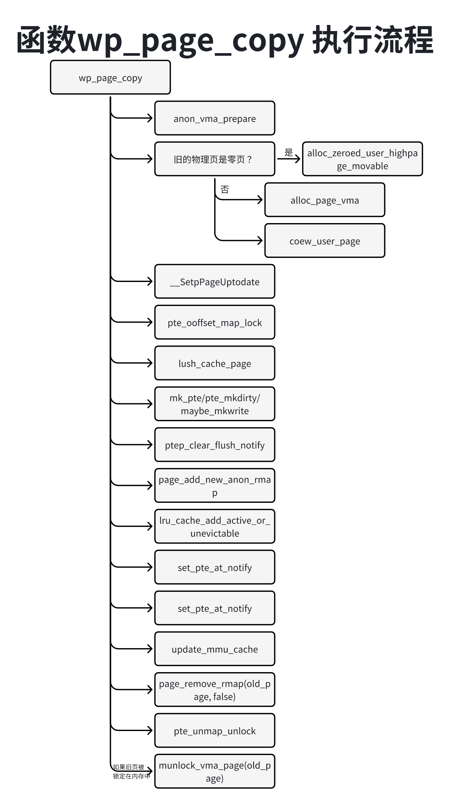
1161// 位置：mm/memory.c2
3static int wp_page_copy(struct vm_fault *vmf)4{5 struct vm_area_struct *vma = vmf->vma;6 struct mm_struct *mm = vma->vm_mm;7 struct page *old_page = vmf->page;8 struct page *new_page = NULL;9 pte_t entry;10 int page_copied = 0;11 const unsigned long mmun_start = vmf->address & PAGE_MASK;12 const unsigned long mmun_end = mmun_start + PAGE_SIZE;13 struct mem_cgroup *memcg;14
15 // 关联一个anon_vma实例到虚拟内存区域16 if (unlikely(anon_vma_prepare(vma)))17 goto oom;18
19 /**20 * 复制物理页分两种情况21 */22 // 如果是零页，分配一个物理页，然后零初始化23 if (is_zero_pfn(pte_pfn(vmf->orig_pte))) {24 new_page = alloc_zeroed_user_highpage_movable(vma,25 vmf->address);26 if (!new_page)27 goto oom;28 29 // 如果不是零页，分配一个物理页，然后把数据复制到新的物理页30 } else {31 new_page = alloc_page_vma(GFP_HIGHUSER_MOVABLE, vma,32 vmf->address);33 if (!new_page)34 goto oom;35 cow_user_page(new_page, old_page, vmf->address, vma);36 }37
38 if (mem_cgroup_try_charge(new_page, mm, GFP_KERNEL, &memcg, false))39 goto oom_free_new;40
41 // 设置新页的标志位PG_uptodate 表示物理页包含有效的数据42 __SetPageUptodate(new_page);43
44 mmu_notifier_invalidate_range_start(mm, mmun_start, mmun_end);45
46
47 // 锁住页表，锁住以后重新毒液表项，如果页表项和锁住以前的页表项不同，说明其他处理区修改了48 // 同一行表项，那么当前处理器放弃更新页表项49 vmf->pte = pte_offset_map_lock(mm, vmf->pmd, vmf->address, &vmf->ptl);50 if (likely(pte_same(*vmf->pte, vmf->orig_pte))) {51 if (old_page) {52 if (!PageAnon(old_page)) {53 dec_mm_counter_fast(mm,54 mm_counter_file(old_page));55 inc_mm_counter_fast(mm, MM_ANONPAGES);56 }57 } else {58 inc_mm_counter_fast(mm, MM_ANONPAGES);59 }60 // c从缓存中冲刷页61 flush_cache_page(vma, vmf->address, pte_pfn(vmf->orig_pte));62 // 使用新的物理页访问权限生成页表项的值63 entry = mk_pte(new_page, vma->vm_page_prot);64 entry = maybe_mkwrite(pte_mkdirty(entry), vma);65 66 // 把页表项清除，并且冲刷页表缓存67 ptep_clear_flush_notify(vma, vmf->address, vmf->pte);68 // 建立物理页到虚拟页反向映射69 page_add_new_anon_rmap(new_page, vma, vmf->address, false);70 mem_cgroup_commit_charge(new_page, memcg, false, false);71 // 把物理页添加到活动LRU俩表活不可回收的LRU链表中，页回收算法需要从LRU72 // 链表中选择需要回收的物理页73 lru_cache_add_active_or_unevictable(new_page, vma);74
75 // 修改页表项76 set_pte_at_notify(mm, vmf->address, vmf->pte, entry);77 // 更新页表缓存78 update_mmu_cache(vma, vmf->address, vmf->pte);79 // 删除旧物理页到虚拟页的反向映射80 if (old_page) {81
82 page_remove_rmap(old_page, false);83 }84
85 /* Free the old page.. */86 new_page = old_page;87 page_copied = 1;88 } else {89 mem_cgroup_cancel_charge(new_page, memcg, false);90 }91
92 if (new_page)93 put_page(new_page);94 // 释放页表锁95 pte_unmap_unlock(vmf->pte, vmf->ptl);96 mmu_notifier_invalidate_range_end(mm, mmun_start, mmun_end);97 // 如果页表项映射到新的物理页，并且旧的物理页被锁定在内存中那么把98 // 旧的物理页解除锁定99 if (old_page) {100
101 if (page_copied && (vma->vm_flags & VM_LOCKED)) {102 lock_page(old_page); /* LRU manipulation */103 if (PageMlocked(old_page))104 munlock_vma_page(old_page);105 unlock_page(old_page);106 }107 put_page(old_page);108 }109 return page_copied ? VM_FAULT_WRITE : 0;110oom_free_new:111 put_page(new_page);112oom:113 if (old_page)114 put_page(old_page);115 return VM_FAULT_OOM;116}内核访问虚拟内存地址，正常情况下不会出现虚拟页没有映射到物理页的状况，内核使用线性映射区域的虚拟地址，在内存管理子系统初始化的时候就会把虚拟地址映射到物理地址，运行过程中科能使用vmalloc()函数从vmalloc区域分配虚拟内存区域，vmalloc()哈数会分配并且映射到物理页。如果出现虚拟页没有映射到物理页的情况，一定是程序错误，内核将会崩溃。
内核可能访问用户虚拟地址，进程通过修通调用进入内核模式，有些系统调用会传入用户空间的缓冲区，内核必须使用头文件"uacess.h"定义的专用函数访问用户空间缓冲区，这些专用函数在异常表中添加了可能触发异常的执行地址和异常修正程序的地址。如果访问用户的缓冲区时生成页错误异常，页错误异常处理程序发现用户虚拟地址没有被分配给进程，就在异常表中查找指令地址对应的异常修正程序，如果找到了，使用异常修正程序修正异常，避免内核崩溃。
在内核模式下执行时触发页错误影响，ARM64架构内核的处理流程如下图所示：
概括起来有3种处理方式：
1）如果不允许内核执行用户空间的指令，那么进程在内核模式下视图执行用户空间的指令时，内核崩溃。
2）如果进程在内核模式下访问用户虚拟地址，先使用函数__do_page_fault处理，如果处理失败，最后一招是使用函数__do_kernel_fault处理。
3）其他情况使用函数__do_kernel_fault处理。
针对访问数据生成的异常，函数__do_kernel_fault尝试在异常表中查找异常修正程序。
如果找到异常修正程序，把保存在内核栈中的异常链接寄存器（ELR_EL1, Exception Link Register for Exception Level 1 ）的值修改位异常修正程序的虚拟地址，当异常处理程序返回的时候，处理器把程序技术区设置成异常连接寄存器的值，执行异常修正程序。
代码：
361 // 位置：arch/arm64/mm/fault.c2
3static void __do_kernel_fault(struct mm_struct *mm, unsigned long addr,4 unsigned int esr, struct pt_regs *regs)5{6 const char *msg;7
8 // 如果异常是由访问数据生成的，那么在异常表中查找异常修复程序，如果找到返回9 if (!is_el1_instruction_abort(esr) && fixup_exception(regs))10 return;11
12 // 清除任何可能组织中断打印信息的自旋锁（bust 的意思是打碎）13 bust_spinlocks(1);14
15 if (is_permission_fault(esr, regs, addr)) {16 if (esr & ESR_ELx_WNR)17 msg = "write to read-only memory";18 else19 msg = "read from unreadable memory";20 } else if (addr < PAGE_SIZE) {21 msg = "NULL pointer dereference";22 } else {23 msg = "paging request";24 }25
26 // 打印触发页错误异常的原因27 pr_alert("Unable to handle kernel %s at virtual address %08lx\n", msg,28 addr);29 // 打印页表信息30 show_pte(mm, addr);31 // 调用函数die()打印寄存器信息32 die("Oops", regs, esr);33 bust_spinlocks(0);34 // 终止当前进程35 do_exit(SIGKILL);36}bust_spinlocs(1)把全局变量oops_in_pregress加1，终端驱动程序需要再申请自旋锁的地方，如果全局变量oops_in_progress不是0，救护已使用spin_trylock()尝试申请自旋锁，如果自旋锁已经被其他地方持有，不会等待自旋锁，继续往下执行
41if(oops_in_progress)2locked = spin_trylock(&lock);3else4spin_lock(&lock);
函数fixup_exception根据执行地址在异常表中查找，然后把保存在内核栈中的异常链接寄存器的值修改位异常修正程序的虚拟地址，代码如下：
111// 位置：arch/arm64/extable.c2
3int fixup_exception(struct pr_regs *regs)4{5 const struct exception_table_entry *fixup;6 fixup = search_exception_tables(instruction_pointer(regs));7 if(fixup)8 regs-?pc = (unsigned long) &fixup->fixup + fixup->fixup;9 10 return fixup != NULL;11}根据触发异常的指令的虚拟地址在异常表中查找，如果找到表项，那么把保存在爱内核栈中的异常链接寄存器的值修改位异常修正程序的虚拟地址。当异常处理程序返回的时候，处理器把程序计数器设置成议程连接寄存器的值，执行异常修正程序。
异常表项中存储的指令是相对地址：fixup->insn = (指令的虚拟地址 - &fixup0>insn)。
异常表项汇总存储的异常修正程序的异常链接寄存器的值。生成的页错误异常的时候，处理器会把触发异常的指令地址保存在异常链接寄存器中。
函数search_exception_tables根据执行地址异常表中查找表项，代码如下：
161// 位置：kernel/extable.c2
3const struct exception_table_entry *search_exception_tables(unsigned long adr)4{5 const struct exception_table_entry *e;6 7 // 在内核异常表中查找8 e = search_extable(__start_ex_table - 1 , addr);9 10 // 如果在内核的异常表中没有找到，那么根据触发异常的指令的虚拟地址找到内核模块，11 // 然后在内核模块的异常表中查找12 if(!e)13 e = search_module_extables(addr);14 15 return e;16}进程在内核模式下运行的时候，可能需要访问用户虚拟地址，应用程序通常是不可信任的，不能保证传入的用户虚拟地址是合法的，所以必须采取措施保护内核。当前采用的措施使用异常表，每条表项有两个字段：
1）可能触发异常的指令的虚拟地址。
2）异常修正程序的起始地值。
异常表项的定义如下：
61// 位置：arch/arm64/include/asm/extable.h2
3struct exception_table_entry4{5 int insn , fixup;6};异常表通常不是直接保存虚拟地址，而是保存相对地址。假设可能触发异常的指令的虚拟地址p1，异常修正程序的其实虚拟地址是p2，对应的异常表项的字段insn的虚拟地址是p3，字段fixup的虚拟地址是p4，那么异常表项的字段insn的值是（p1 ~ p3）字段fixup的值是（p2 ~ p4）。
内核有一张异常表，全局变量_start__ex_table存放异常表的其实地址，__stop_ex_table存放异常表的结束地址。乜咯内核模块可以有自己的异常表。
进程在内核模式下访问用户的虚拟地值的时候，只允许使用头文件"uaccess.h"声明的函数，以函数get_user为例说明，函数get_user从用户空间读取C语言标准类型的数据，ARM64架构实现的代码如下：
101// 位置：arch/arm64/include/asm/uaccess.h2
3({5 __typeof__(*(ptr)) __user *__p = (ptr);6 might_fault();7 access_ok(VERIFY_READ, __p, sizeof(*__p) ? 8 __get_user((x), __p) :9 ((x) = 0, -EFAULT);10})从用户虚拟地址ptr读取数值并存放到局部变量x中。
“access_ok(VERIFY_READ, __p, sizeof(*__p))”检查（用户虚拟地址 + 长度）是否小于进程的虚拟地址空间的上界（current->addr_limit），如果小于，用户虚拟地址是合法的，返回1否则返回0。
如果用户虚拟地址是合法的，那么使用“__get_user((x), __p)”从用户读取数值。
如果用户虚拟地址不是合法的，那么把x设置成0，返回“-EFAULT”。
假设数据类型是长整数，在64位内核中长征输的长度是8字节，把“__get_user((x), __p)”展开以后是：
271asm volatile(2 // 从虚拟地址__p读取数据并存放到变量x使用的64位寄存器中，3 // 这条加载指令可能触发页错误异常4 "1: ldr %x1, [%2]\n",5 "2:\n"6 // 定义“.fixup”节，用来存放异常修正程序。7 " .section .flxup, \"ax\"\n"8 // 把变量er使用的32位寄存器设置为“-EFAULT”9 "3: mov %w0,%3\n"10 // 把变量x使用的寄存器设置为011 " mov %1, #0, #0\n"12 // 跳转到标号2 如果标号1的加载指令页错误异常，13 // 页错误异常处理程序失败，异常修正程序跳转到标号1的下一条指令14 " b 2b\n"15 " .previous\n"16 " .pushsection\n"17 // 和上一条指令承兑存在 表示两者之间指令放到“__ex_table”节 异常表节18 " .pushsection _ex_table, \"a\"\n"19 // 表示把后面的数据地址对齐到2的3次方，也就是对齐到820 " .align 3\n"21 // 把标号1相对当前地址的差值和标号3相对当前地址的差值存放到异常表节，两个22 // 相对地址组成一条异常表项，标号1是可能触发页错误异常单额加载指令，标号3是异常修正程序的起始地址23 " .long (1b - .), (3b - .)\n"24 " .popsection\n"25 : "+r" (err), "=&r" (x)26 : "r" (__p), "i" (-EFAULT))27)
再看看链接脚本：
121// 位置：arch/arm64/kernel/vmlinux.lds.S2
3...4 . = ALIGN(SEGMENT_ALLGN);5 // 代码段的结束地址6 _extxt = .;7 // 从这里到8 RO_DATA(PAGE_SIZE)9 // _init_begin将被标记为只读和不可执行10 EXCEPTION_TABLE(8)11 NOTES12...宏EXCEPTION_TABLE的定义如下：
101// 位置：include/asm-generic/vmlinux.lds.h2
3// 异常表4 . = ALIGN(align);6 __ex_table : AT(ADDR(__ex_table) - LOAD_OFFSET){7 VMLINUX_SYMBOL(__start__ex_table) = .;8 KEEP(*(__ex_table))9 VMLIMUX_SYMBOL(__stop__ex_table) = .;10 }内核的全局变量_startex_table存放异常表节（ex_table）的其实地址，__stop_ex_tble存放异常表节的地址。